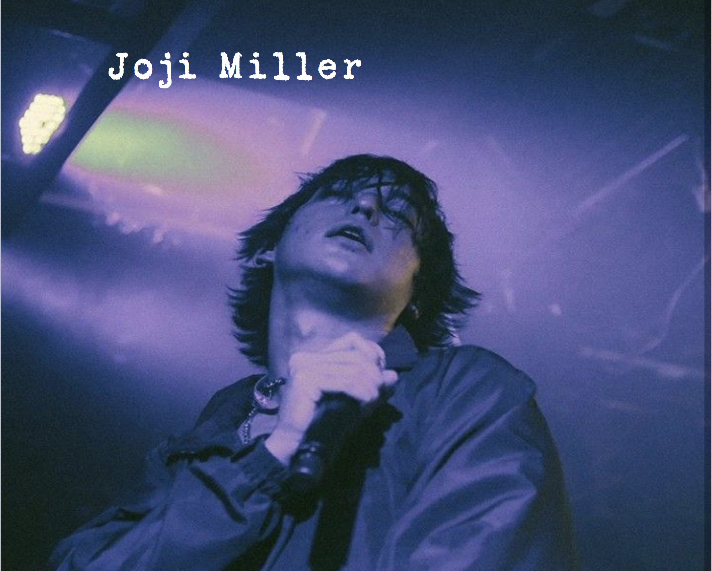

Coded Websites

Animal Wiki
Objectives
To become familiar with the basics of using HTML and CSS to structure and style web pages by creating a visual dictionary called animal wiki.

Small Site
Objectives
To become more familiar with using HTML and CSS to structure and style web pages, successfully use typography and color to categorize information, organize information in a logical way and provide a means for users to navigate through a site, become familiar with optimizing images for the web, and develop methods for creative expression in a web environment.
